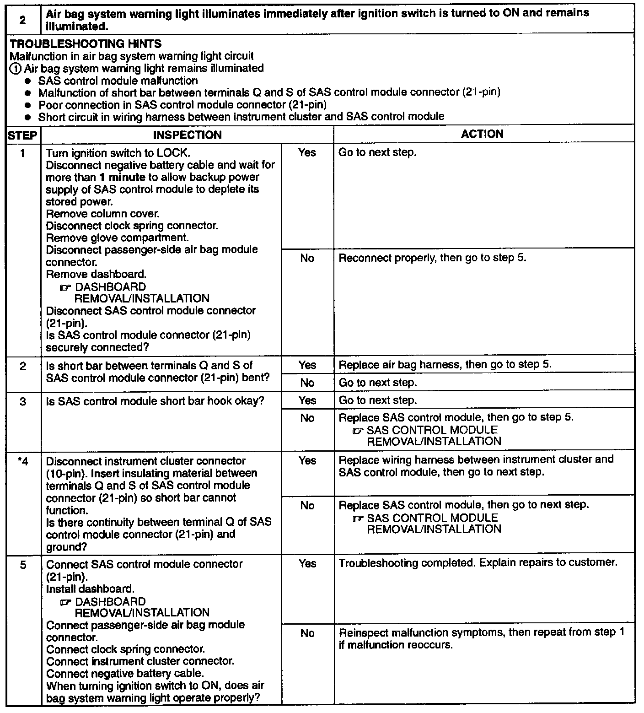

Operation CHARM
: Car repair manuals for everyone.
Home
>>
Mazda
>>
1999
>>
MX-5 Miata L4-1.8L DOHC
>>
Repair and Diagnosis
>>
Restraints and Safety Systems
>>
Air Bag Systems
>>
Testing and Inspection
>>
Symptom Related Diagnostic Procedures
>>
2. Warning Light Comes ON and Stays ON
2. Warning Light Comes ON and Stays ON

2.
Air bag system warning light illuminates immediately after ignition switch is turned to ON and remains illuminated.